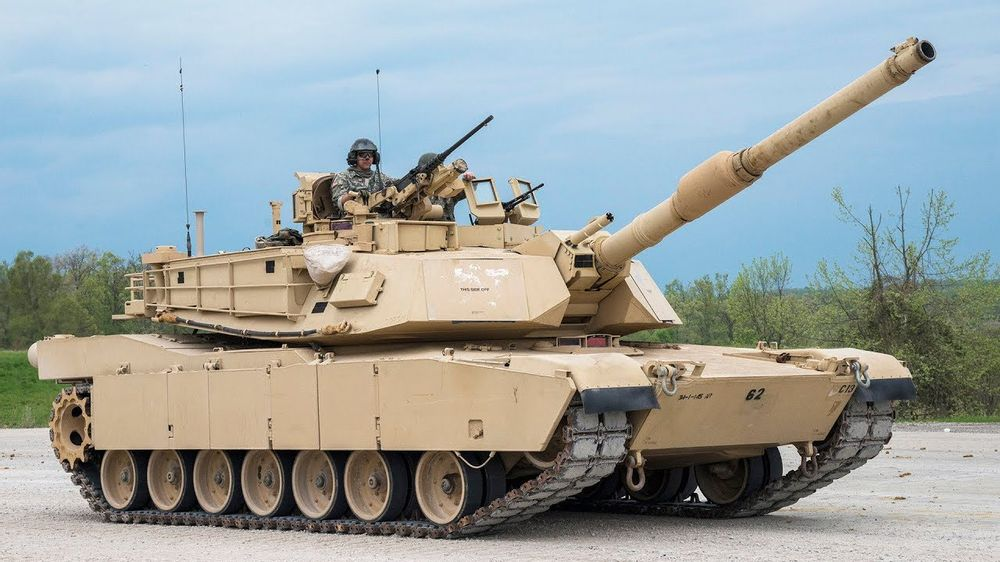
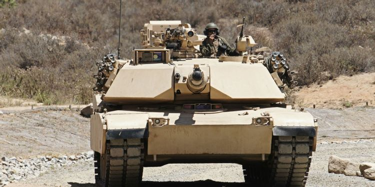
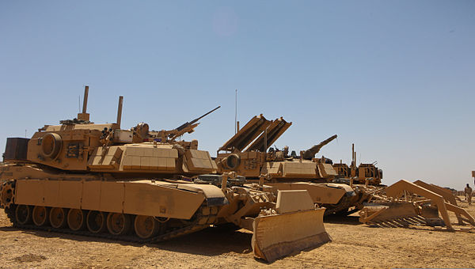
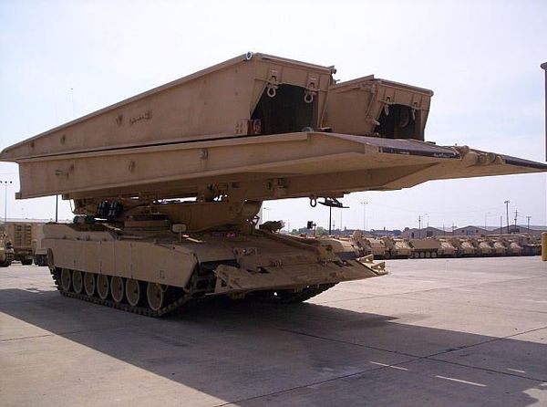

M1 에이브람스(M1 Abrams) 전차는 1979년에 설계되어 1980년부터 생산한 미국제 주력전차다.
| 국가 | 미국 |
| 개발년도 | 약1970년 |
| 배치 | 1981년 |
| 크기 | 전장 7.93m(포신포함 9.77m) |
전폭 3.66m, 전고 2.44m |
| 승무원 | 4명 (전차장,포수,조종수,탄약수) |
| 주무장 | 120mm L/44 M256A1활강포 |
| 최고속도 | 평지 70km/h, 야지 40km/h |
| 엔진 | Honeywell AGT1500C 다중 연료 가스터빈 |
1500마력 |

여러 매체에서도 등장하면서도 인기가 많은 미국제 기갑차량이다
여러 후속작들이 세간에 배치 되있다
M1A2sepV4까지 나왔으며 기존의 M1들 까지 나열하면9가지나 된다

파생형으로는 M1ABV지뢰제거차량과 M104울버린 교량전차도 있다

매체에서는 미군이 등장한다면 거의 필수로 등장한다 봐도 과언이 아니다
미군 M1전차 기동 영상